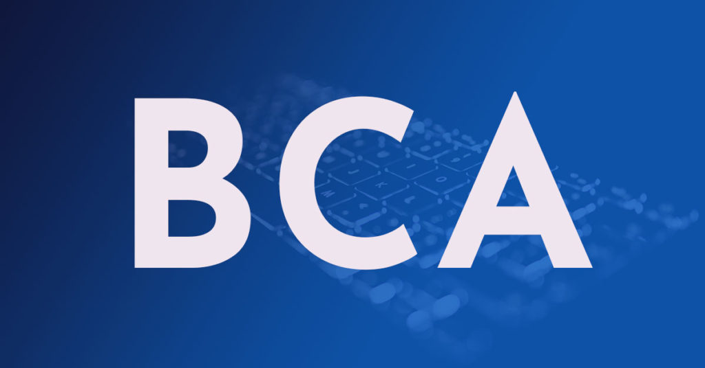

Bachelor of Computer Applications:
The BCA course is a full time three years (six semesters) Bachelor’s Degree in Computer Application. The basic objective of BCA Course is to provide young men and women with the required knowledge and necessary skills to get rewarding careers into the changing world of Information Technology.
Eligibility Criteria:
A candidate seeking admission to the BCA Course must have passed 10+2 (any stream) securing not less than 50% marks in aggregate (5% relaxation to ST/SC candidates) from the Central Board of Secondary Education or any other equivalent examination recognized by the Mizoram University preferably with Mathematics as one of compulsory or optional course, or any other vocational course related to the computer stream having either Computer Science or Computer Engineering as compulsory/optional course.
Outline of the Course:
Code 1st Semester
BCA101 English Language & Communication Skills
BCA102 Mathematics-I (Bridge Course)
BCA103 Introduction to Information Technology
BCA104 Digital Computer Fundamentals
BCA105 Programming Language through C
BCA103P PC Applications and Internet Technology
BCA105P Programming in C
Code 2nd Semester
BCA201 Personality and Soft Skills Development
BCA202 Mathematics –II (Discrete Mathematics)
BCA203 Data Structure using C
BCA204 System Analysis and Design
BCA205 Accounting and Financial Management
BCA203P Data Structure using C
BCA205P Tally ERP 9.0
Code 3rd Semester
BCA301 Management Information Systems
BCA302 Mathematics – III (Numerical Analysis)
BCA303 Operating Systems
BCA304 Object Oriented Programming in C++
BCA305 Computer Organization and Architecture
BCA303P Unix and Shell Programming
BCA304P C++ Programming
Code 4th Semester
BCA401 Environment and Ecology
BCA402 Database Management Systems
BCA403 Computer Networking
BCA404 Software Engineering
BCA405 GUI Programming
BCA402P Oracle Laboratory
BCA405P Programming with VB 2010 with Mini Project
Code 5th Semester
BCA501 Introduction to Java Programming
BCA502 Computer Graphics and Multimedia
BCA503 Microprocessors
BCA504 Software Project Management
BCA501P Java Programming
BCA503P Assembly Language Programming
Elective - I (Any one from below)
BCA5E1 Introduction to e-Governance
BCA5E2 Computer Network Security
BCA5E3 Data Mining and Warehousing
Code 6th Semester
Elective – II (Any one from below)
BCA6E1 Operation Research
BCA6E2 Theory of Computing
BCA6E3 Fundamentals of TCP/IP
BCA6E4 IT Acts and Cyber Laws
Elective – III (Any one from below)
BCA6E5 Artificial Intelligence
BCA6E6 Internet and e-Commerce
BCA6E7 Simulation and Modeling
BCA6E8 Analysis and Design of Algorithms
BCA601P PROJECT WORK